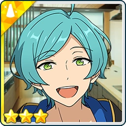
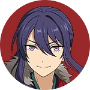

People and Fish
Idol Story




Kanata: splashing splashing... ♪ the “sea” breeze feels so nice~♪
i’m “glad” i found such a lovely “tide pool”. i don't have to worry about being swept away here.
i can float around with all the little “fishies” as much as i like~. puka puka...♪
“whelks”, “limpets”, japanese “top” shells... and there are “chitons” over here, too.
ufufu. it's like being inside a “picture” book.
...hm? what is that “poking” my hand?
oh! it is mr. hermit “crab”. hello~♪ do you want to play with me?
then let's have a “race”! you and mr. “crab” over there!
the “finish” line is that bucket! do your “best”, both of you! one, two, three, four...♪
mr. hermit crab “wins”! mr. “crab” did his best, too. there, there. good boy, good boy.
the “shellfish”, mr. hermit crab, mr. “crab”, and all the little fishies, too...
all of you look so delicious~♪”
Souma (My face is reflected as clearly as though I were looking into a mirror... Hmm. This should be enough sharpening for the knife.)
(Now all that remains is to wait for the fresh ingredients that Shinkai-dono and I are to prepare.)
(It was only with Shinkai-dono's assistance that our recent work was a success.)
(To repay his kindness, I, Kanzaki Souma, shall put all my skill into preparing a delicious seafood feast!)
(Waiting here like this brings to mind the Marine Life Club, of which Shinkai-dono was once a member.)
(Fortunately, several people with an interest in fish joined the club, and the Club was spared from being disbanded.)
(However, there is no guarantee that someone with the same enthusiasm will come along next year, or the year after.)
(If it is to continue for generations to come, then I, as its president, must surely do something to secure its future... But what should I do...?)
Kanata: souma, sorry to keep you waiting~.
Souma: Oh! Shinkai-dono, you have returned!
Kanata: yep~! i brought back lots and lots of “sea creatures”!
Souma: Oh-ho! I look forward to seeing what you have brought.
...Hmm? Setting aside the clams and crabs, we also have gooseneck barnacles, hermit crabs, and limpets...
An unusual assortment of creatures indeed, but they should all be edible once cooked. I shall begin by sautéing them in Butter.
Kanata: yay~! i'll watch from over here, then! ♪
...souma. you're even better at cooking now, aren't you~?
Souma: That is surely thanks to Niki's Kitchen. When one has someone nearby from whom to learn, one's skills are bound to improve.
Just as with the way of the sword, I must never grow complacent, but continue to hone my skills! ♪
Kaoru: Yahoo! I thought I smelt something good~
Kanata: yep~! we're cooking the “little” fishies! kaoru, come eat with us, too! ♪
Kaoru: Oh? What kind of fish are you making...?
Wait, aren't there more things here that aren't fish than things that are? What about this one? Is it really okay to eat? Are you sure it's safe?
Kanata: of course~! i've already said “bye-bye” to all the “poisonous” ones.
Kaoru: Hmm. Well, I suppose I'll let you treat me to a meal, then. It's not every day you get to enjoy seafood like this, after all~♪
Souma: I had no intention of inviting you, but... Well, I would not refuse a request from Shinkai-dono.
However, I fear we may not have quite enough ingredients for three people.
Kanata: ahem! i brought “this” along, just in case something like that happened~♪
Souma: Is this a deep-sea fish?
Kanata: sometimes the “fishermen” give me fish to put on display at the “aquarium”. this little one got mixed in with them.
“aoumi aquarium” doesn't have the facilities to “display” it, so let's enjoy eating it here... ☆
Kaoru: I do feel a little sorry for it, but I suppose that's just our own selfishness talking. After all, we eat all sorts of living things every day.
Souma: Indeed. If we cannot return it to the depths of the sea, then eating it with gratitude is the best consolation we can offer.
I shall prepare sashimi and fish soup with this. Pray, wait a moment.
Time: Some time later
Kaoru Whoa, the dishes just keep coming!
Souma Come, come! Please, help yourselves!
Kanata yep~. then i'll start with the “sashimi”. munch, munch...
Kaoru Mmm, delicious! ♪ I'm honestly surprised it's this good. When I first saw the ingredients, I thought, ‘There's no way we're actually going to be able to eat this stuff!’
Kanata ufufu. “people” and “fish” aren't always what they seem on the outside. you can only discover what they're “really” like by getting to know what's on the inside.
...ah! silly me. i almost forgot something.
souma~. could you “cook” this little one, too? ♪
Kaoru An oarfish?! Where on earth were you hiding that?!
Souma It doesn't even fit inside the room anymore... Just how enormous is this thing...?
Very well! We've come this far, so there's no turning back! I shall put my heart and soul into cooking every last bit of it!
Kanata “oarfish” aren't poisonous, though.[1] i'm counting on you, souma.
let's enjoy every last bit of it... ☆